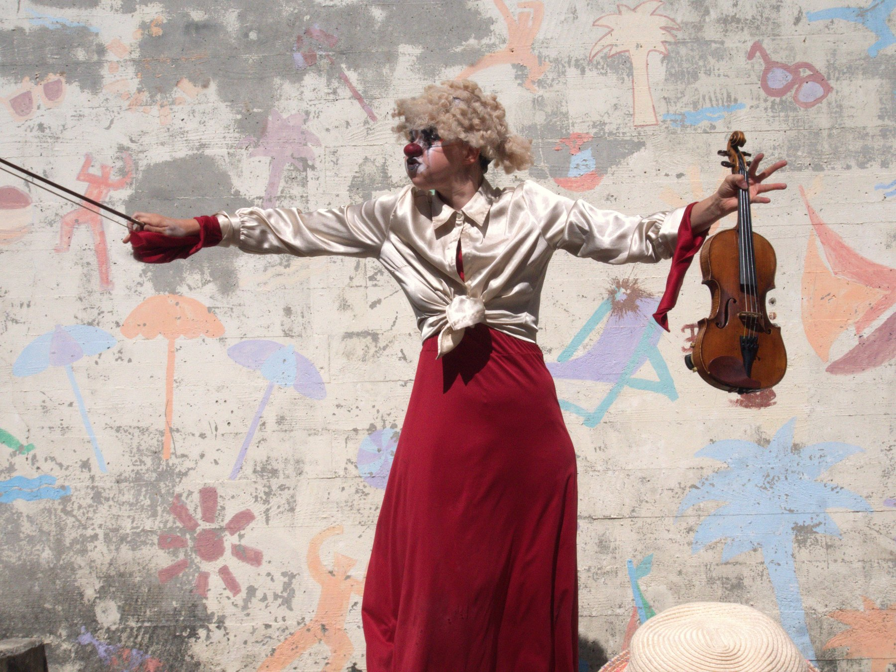

Teaser
Captation de la forme courte : numéro de 10 minutes, Festival du numéro de clown, Grenoble (24 mai 2025).
En bref
Tantôt puissante et combative, tantôt perdue et touchante, cette clowne violoniste arrive sur scène persuadée qu'elle va faire pleurer son public grâce à sa musique. Elle déploie alors toute son énergie pour toucher les cœurs afin de laver la société de ses maux. Mais bien sûr, plus elle s'efforce d'être poignante, plus elle fait rire.
Ce paradoxe d'une clowne qui annonce qu'elle va faire pleurer crée une tension dramatique directement liée au public : la clowne veut le faire pleurer, la comédienne veut le faire rire, et la première échoue chaque fois que la seconde réussit.
Le violon, instrument associé aux larmes et à la nostalgie, devient ici un prétexte grotesque et poétique à l'émotion. Tour à tour pathétique ou sublime, il accompagne la clowne dans sa quête impossible comme un véritable partenaire de jeu. De la mort à l'amour en passant par la guerre, elle aborde des thèmes universels d'une manière grotesque mais non moins sincère, et finit par réussir son exploit malgré elle.
- Style Clown, théâtre physique
- Durée 30 minutes
- Public visé Tout public, enfants accompagnés
- Interprétation Clara Urio
- En tournée 2 personnes — 1 interprète et 1 accompagnante / regard extérieur
- Jauge 20 à 250 personnes
- Technique Aucun besoin technique, sauf éclairage en cas de jeu en soirée
Galerie
Presse
Calendrier
Dates passées
2024
- 19 mai — Relais du Parc Chuit, Genève (forme expérimentale de 30 min)
- 23 juin — Relais du Parc Chuit, Genève (forme expérimentale de 30 min)
- 18 août — Festival Théâtres Nomades, Bruxelles (forme expérimentale de 30 min)
- 22 septembre — Relais du Parc Chuit, Genève (forme expérimentale de 30 min)
2025
- 29 avril — Festival l'Escalier au Théâtricul, Genève (forme courte)
- 24 mai — Festival du numéro clown, Grenoble (forme courte)
- 20-23 août — Festival international de théâtre de rue d'Aurillac (expérimentations autour de la matière et du numéro)
- Septembre 2025 à avril 2026 — Cabaret Artistique Clownesque, Cabaret B.E.T. et Cabaret du Festival l'Escalier, Paris et Genève (forme courte)
2026
- 11-15 mai — Résidence à l'Usine Kugler, Genève
- 22-27 juin — Résidence à La Dépendance, ville de Lancy, Genève
- Août — Festival La Plage des Six Pompes, La Chaux-de-Fonds, 4 dates dans le cadre de « La Nouvelle vague » (accompagnement artistique par des professionnels des arts de la rue)
Dates futures et projections
2026
- 26-27 septembre — « La Ville est à vous » des Pâquis, Genève
- Résidence à la Yourte des Bains des Pâquis, Genève, pour affiner l'écriture et fixer le format à 40 minutes
2027
- Développement d'un réseau de diffusion pour l'été 2027 (festivals d'arts de la rue de Suisse romande et de France, Festival international de théâtre de rue d'Aurillac…)
2028
- Résidences pour l'écriture d'une version de 50 minutes pour la salle, sortie prévue pour la saison 2028-2029 (dossier en cours d'envoi auprès de théâtres romands et français)
Les dates de représentation à venir sont sur la page Agenda.
L'équipe
Clara Urio — jeu et écriture
Après avoir étudié la musique au Conservatoire Populaire de Genève et participé à divers projets de théâtre amateur, Clara s'est formée à l'École Internationale de Théâtre LASSAAD à Bruxelles (2021–2023).
Titulaire d'un Bachelor en littérature et anthropologie (Université de Neuchâtel, 2021), cette jeune artiste pluridisciplinaire nourrit ses créations d'une réflexion sur les comportements humains et les dynamiques sociales.
Elle se perfectionne dans le jeu clownesque et bouffonesque auprès d'Alexandre Bordier, Gabriel Chamé Buendia et Hélène Vieilletoile, et explore le jeu masqué avec Omar Porras. Depuis 2023, elle expérimente le clown en solo, sur scène et dans l'espace public, où elle affine son jeu et puise la matière de ses écritures. En 2025, elle co-fonde à Genève Impro Clown, un format mensuel d'improvisations clownesques réunissant différents artistes.
Musicienne dès l'enfance, Clara a étudié le violon au Conservatoire de Genève, la rythmique et l'improvisation à l'Institut Jaques-Dalcroze, et le violon-jazz au Conservatoire de Neuchâtel. Ce bagage nourrit ses collaborations scéniques, notamment dans Hapax ou la Comparution immédiate (Festival de la Bâtie 2025), où elle est à la fois musicienne et comédienne. Son travail mêle ainsi théâtre et musique, dans une recherche clownesque du jeu.
Alexis Kasparians — accompagnement artistique
Née en 1989 à Genève, Alexis se forme au clown et au théâtre gestuel à la Boîte-à-Nez (Lausanne), puis à l'École Internationale de Théâtre LASSAAD à Bruxelles. Avant cela, elle navigue dans le milieu de l'art contemporain et de l'enseignement du latin et de l'histoire de l'art.
Co-fondatrice du Collectif Imaginaire, elle crée le duo clownesque Page Blanche — La dérive des poules migratrices et des limaces vagabondes (déambulation, coproduction Paléo / La Ruche 2023-24, et version salle en 2026). Elle accompagne des créations en regard extérieur — 2Soleils, solo de J. Bouvet en 2025, et sa version salle en coproduction avec Château Rouge Annemasse en 2027-28 —, co-programme la Yourte des Bains des Pâquis à Genève et travaille comme clowne hospitalière au sein d'Hôpiclowns. En 2025, elle initie Rire en résonance en Arménie avec la Cie La Temeraria, un programme de recherche et de développement du clown d'intervention avec des artistes locaux.
Leur collaboration
Clara et Alexis se sont rencontrées en mars 2021, lors d'un stage de clown donné par Hélène Vieilletoile à Neuchâtel, avant de se retrouver à l'École LASSAAD à Bruxelles. Leur collaboration repose sur une passion et une vision communes du clown : un jeu sincère, ancré dans l'instant et dicté par la loi du public.
Elles se retrouvent également dans la manière d'aborder le processus de création : partir d'un prétexte scénique pour affiner l'écriture et faire émerger le thème au fil des rencontres avec le public, toujours dans une recherche de l'imprévu et d'un jeu organique.
Soutiens
Remerciements
Merci aux précieux regards et conseils de : Sylvie Bousquet, Gabriel Chamé Buendia, Claire Ducreux, Julie Serrano, Matthieu Sesseli et Hélène Vieilletoile.
Programmer ce spectacle, recevoir le dossier ou la fiche technique :
Nous contacter